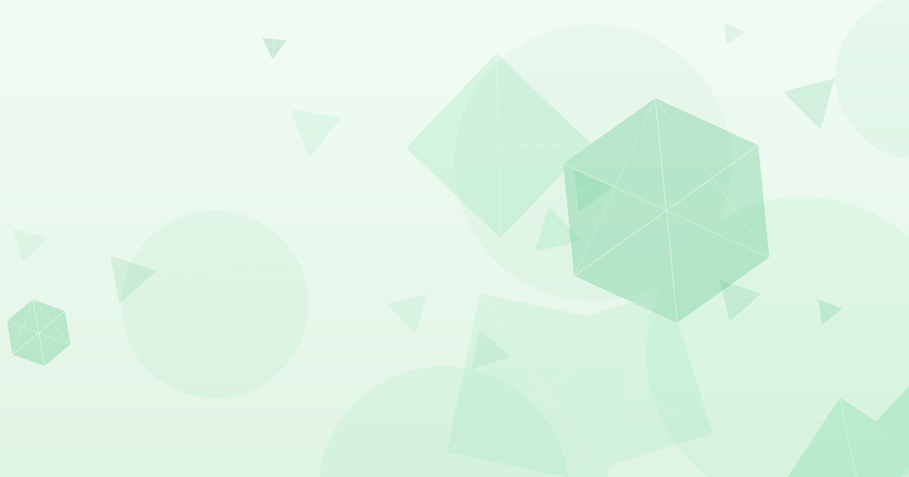

Epoch AI의 FrontierMath에서 AI가 미해결 수학 난제를 처음 풀었습니다.
GPT-5.4 Pro가 하이퍼그래프 램지 문제를 풀었고, Opus 4.6과 Gemini 3.1 Pro도 뒤이어 정답을 냈습니다.
원출제자가 풀이 기여자를 학술 논문 공동 저자로 초대했습니다. AI가 지식의 경계를 넓히는 단계에 진입했습니다.
수학 올림피아드 만점은 옛날 얘기입니다.
AI가 수학자도 못 푼 문제를 풀기 시작했는데, 당신의 AI는 아직 FAQ 챗봇입니까?
지금까지 AI 벤치마크는 이미 정답이 있는 시험이었습니다. 수학 올림피아드, 대학원 시험, 코딩 대회 모두 사람이 먼저 풀어놓은 문제입니다. FrontierMath(프론티어매스)는 다릅니다. 전문 수학자도 풀지 못한 미해결 난제를 모아놓은 벤치마크입니다. 이 벤치마크에서 AI가 처음으로 정답을 냈습니다.
AI 수학 실력은 빠르게 올라가고 있습니다. 2025년 IMO(국제수학올림피아드)를 거의 만점으로 통과했습니다. 하지만 그것은 정답이 있는 문제였습니다. FrontierMath는 15개 미해결 난제로 구성됩니다(Epoch AI, 2026). 이 중 첫 문제가 풀렸습니다.
첫째, AI가 학술 논문 수준의 수학 풀이를 제출했습니다. Kevin Barreto와 Liam Price가 GPT-5.4 Pro를 사용해 하이퍼그래프 램지 문제를 풀었습니다. 이 문제는 UNC Charlotte의 Will Brian 교수가 출제했습니다. 조합론(경우의 수와 구조를 다루는 수학 분야) 난제로, 전문 수학자들도 풀지 못했습니다.
둘째, 원출제자가 풀이의 학술적 가치를 인정했습니다. Brian 교수는 풀이를 검증한 뒤 학술 논문 게재를 계획하고 있습니다. Barreto와 Price를 공동 저자로 초대할 예정입니다. AI의 수학 풀이가 학술지에 정식 게재되는 첫 사례가 될 수 있습니다.
셋째, 여러 AI 모델이 독립적으로 같은 문제를 풀었습니다. GPT-5.4 Pro가 가장 먼저 풀었습니다. 이후 Opus 4.6과 Gemini 3.1 Pro도 정답을 제시했습니다(Epoch AI, 2026). 한 모델의 우연이 아닙니다. 현재 AI의 수학적 추론 능력이 이 수준에 올라왔습니다.
넷째, 풀린 문제는 15개 중 가장 낮은 난이도입니다. FrontierMath는 난이도를 4단계로 분류합니다. 보통 수준, 견고한 성과, 주요 진전, 돌파구입니다. 이번 문제는 가장 낮은 '보통 수준'입니다. 나머지 14개는 아직 미해결입니다.
다섯째, AI의 역할이 '도구'에서 '공동 연구자'로 바뀌고 있습니다. 기존 AI 벤치마크는 정답 맞히기 대회였습니다. FrontierMath는 다릅니다. 풀이 자체가 학술 논문으로 출판 가능해야 합니다. AI가 인간의 지식 경계를 넓히기 시작했습니다.
AI의 추론 능력은 FAQ 응대를 넘어섰습니다. 시장 분석, 재무 모델링, 경쟁사 특허 분석 등 전문가 판단이 필요한 업무에 AI를 실험합니다. Claude에 "이 분기 매출 데이터에서 숨겨진 패턴 3가지를 찾아줘"라고 요청합니다. (1시간, 기존 데이터로 테스트)
FrontierMath에서도 수학자가 AI 풀이를 검증했습니다. 기업도 마찬가지입니다. AI가 내놓은 분석 결과를 전문가가 검토하는 절차를 설계합니다. "AI 초안 → 전문가 검증 → 최종 승인" 3단계를 표준화합니다. (2시간, 프로세스 설계)
AI가 미해결 문제까지 풀 수 있다면, 조직의 AI 활용 기준도 바뀌어야 합니다. 현재 AI 활용 범위를 점검하고, 전문 분석 영역으로 확대할 파일럿을 기획합니다. (30분, 현황 점검)
가장 쉬운 문제가 풀렸을 뿐입니다. 15개 난제 중 14개는 여전히 미해결입니다. 풀린 문제의 난이도는 4단계 중 최하위입니다. AI의 수학 능력이 전면적으로 돌파한 것은 아닙니다.
AI 단독이 아니라 사람과 AI의 협업입니다. GPT-5.4 Pro가 혼자 풀어낸 것이 아닙니다. 사용자가 적절한 질문을 던지고 방향을 잡았습니다. AI를 도구로 활용하는 사람의 역량이 여전히 핵심입니다.
검증 없는 AI 결과물은 위험합니다. 이번 사례에서도 원출제자의 검증이 필수였습니다. 기업에서 AI 분석 결과를 검증 없이 의사결정에 쓰면 오류 비용이 큽니다.
난이도 평가에 논란이 있습니다. 수학자 설문에서 이 문제의 난이도를 95~99% 풀릴 확률로 평가했습니다(Epoch AI, 2026). 상위 난이도 문제와는 격차가 큽니다. 성급한 일반화는 금물입니다.
AI가 정답이 없는 문제를 풀기 시작했습니다. 아직 첫 걸음이지만, AI의 역할이 '도구'에서 '공동 연구자'로 바뀌는 신호입니다.
우리 조직의 AI 활용 수준을 점검하고 싶다면, 무료 진단을 신청하세요.